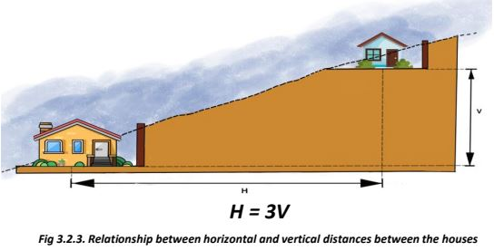
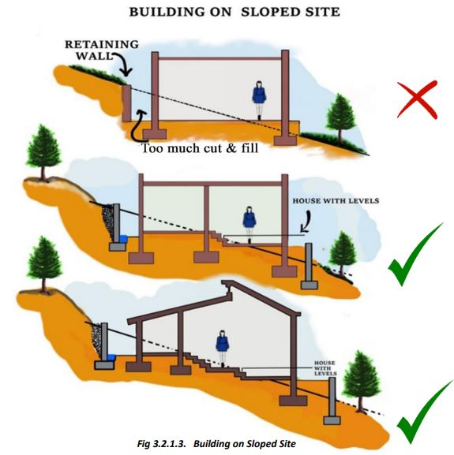
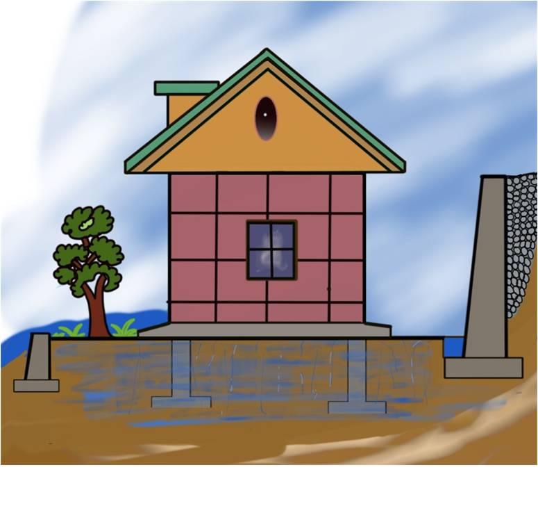

Site Identification

Prefer locations where the slopes are gentle (30 degrees or less).
As a general rule, hill slopes that are made of soft soils and have slopes steeper than 30º are vulnerable to landslides. The problem is aggravated in soft, saturated soils even with slopes less than 30º.
If the house is on a steep slope, it should be small.
It is imperative that houses at lower levels be built first. The horizontal distance between subsequent structures at different elevations should be at least 3 times the difference in their founding levels, if not more. (Figure 3.2.3)
3.2.1 Slope

Check that the slopes can be cut into steps of not more than 1 m height to at least 1.5 m width.
Make sure that the site is such that the natural slope drains the water away from the site.
It is important that the slope is cut and filled as minimally as possible. The natural slope of the site must be considered while cutting and filling the slope.

Steeper slopes increase the risk of landslides, erosion, and slope failures. Building structures on such unstable ground can lead to structural damage or collapse.
Water runoff is more rapid on steep slopes, leading to erosion and potential flooding downstream. Proper drainage solutions are essential but can be difficult to implement effectively.
Following are the advantages of gentle slopes:
• Easier Construction
• Better Accessibility
• More Usable Space
• Reduced Erosion Risk
• Better Drainage
• Safety
Each of the given five reasons contributes to the overall cost of your house.

Houses should be built preferably on those hill slopes where the geological layers of rocks slope into the body of a hill, and not along the hill slope.
A site should be such that a minimum clearance of 1.5 m between the retaining wall and building wall can be provided. A suitable breast wall may be made on the cutting side, when soil or soil-mixed boulder deposits rest over rock, which are commonly met in practice. On the valley side, the clearance should be such that the base of the foundation rests on firm soil or rock and not on filled-up ground.
3.2.2 Drainage

It is important to look out for fissures in the ground, especially during summer months. At locations where there is perennial rainfall, soft soil slopes may creep slowly.

Variation in the rise of water levels in the last 30-40 years should be considered before planning. Plinth height above natural ground level should be more than the High Flood Level in the neighborhood of the site and the likely Road Level in the future.
On the uphill side of a building on a sloping site, drainage requires special consideration. The natural flow of water should be diverted away from the foundations.

The building site should be at a reasonably higher level above rivers and gullies such that the site is unaffected by landslides, discharge from dams/reservoirs, and flooding.
3.2.3 Proximity to Water Body
The site should be such that the building pad is sufficiently away from the edge of the terrace. The foundation of an individual building should be located away from the edge of terraces formed as natural floodplain deposits or constructed by cutting and filling along the hillside or riverbank.

Check that your site does not block any seasonal water channel. (Fig. 3.2.3.2)